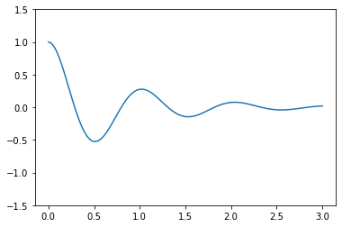

Ex. Solving an ODE with Numerical Modeling
Contents
Ex. Solving an ODE with Numerical Modeling#
import numpy as np
import sympy
from scipy import integrate
import matplotlib.pyplot as plt
import ipywidgets
sympy.init_printing()
Harmonic oscillator#
Numerical manipulation (with SciPy)#
Equation:
\[
\left(\frac{d^2}{dt^2} + \omega_0^2\right) x(t) = 0
\]
write this as two first-order equations
\[
x'(t) = y(t)
\]
\[
y'(t) = \omega_0^2 x(t)
\]
def dxdt(X,t=0):
omega0 = 1
return np.array([ X[1] , -omega0**2 * X[0] ])
xvalues = np.linspace(0, 10, 30)
scipysoln = integrate.odeint(dxdt, [2,3], xvalues)
scipysoln
array([[ 2. , 3. ],
[ 2.89637077, 2.14733236],
[ 3.45174447, 1.04185393],
[ 3.60073574, -0.1862845 ],
[ 3.32580335, -1.39249122],
[ 2.65931583, -2.43475645],
[ 1.67974039, -3.19037178],
[ 0.50240491, -3.57037663],
[-0.73407997, -3.53003211],
[-1.88413978, -3.07408806],
[-2.8123751 , -2.25622393],
[-3.40950246, -1.17272892],
[-3.60522059, 0.04883442],
[-3.37648706, 1.26464837],
[-2.75023125, 2.3315721 ],
[-1.80018384, 3.123994 ],
[-0.63819632, 3.54862026],
[ 0.59892766, 3.5554586 ],
[ 1.76553839, 3.14370393],
[ 2.72428786, 2.36183315],
[ 3.36230018, 1.30189781],
[ 3.60446046, 0.08868679],
[ 3.42225859, -1.13496556],
[ 2.83714563, -2.22499558],
[ 1.91800843, -3.05307129],
[ 0.7730593 , -3.52170129],
[-0.46290403, -3.57571259],
[-1.64436853, -3.2087463 ],
[-2.63223741, -2.46400628],
[-3.31020639, -1.42917263]])
plt.plot(xvalues,scipysoln[:,0],'ro',
xvalues,expr_func(xvalues));
---------------------------------------------------------------------------
NameError Traceback (most recent call last)
Input In [6], in <cell line: 1>()
1 plt.plot(xvalues,scipysoln[:,0],'ro',
----> 2 xvalues,expr_func(xvalues))
NameError: name 'expr_func' is not defined
Damped Harmonic Oscillator#
t = sympy.Symbol("t")
omega0 = sympy.Symbol("omega0")
gamma = sympy.Symbol("gamma")
x = sympy.Function('x')
x = sympy.Function("x")
ode = x(t).diff(t, 2) + 2 * gamma * omega0 * x(t).diff(t) + omega0**2 * x(t)
ode

ode_sol = sympy.dsolve(ode)
ode_sol

ics = {x(0): 1, x(t).diff(t).subs(t, 0): 0}
ics
\[\displaystyle \left\{ x{\left(0 \right)} : 1, \ \left. \frac{d}{d t} x{\left(t \right)} \right|_{\substack{ t=0 }} : 0\right\}\]
ode_sol = sympy.dsolve(ode,ics=ics)
ode_sol

# sol = ode_sol
# known_params = [omega0, gamma]
# x = t
# free_params = sol.free_symbols - set(known_params)
# eqs = [(sol.lhs.diff(x, n) - sol.rhs.diff(x, n)).subs(x, 0).subs(ics)
# for n in range(len(ics))]
# sol_params = sympy.solve(eqs, free_params)
# x_t_sol = sol.subs(sol_params)
# eqs
# free_params
# type(free_params)
# ode_sol
# x_t_sol
# x_t_critical = sympy.limit(x_t_sol.rhs, gamma, 1)
# x_t_critical
def plotDampedOsc(omega0in=15,gammain=0.1):
# xsoln = sympy.lambdify(t, x_t_sol.rhs.subs({omega0: omega0in, gamma: gammain}), 'numpy')
xsoln = sympy.lambdify(t, ode_sol.rhs.subs({omega0: omega0in, gamma: gammain}), 'numpy')
taxis = np.linspace(0, 3, 100)
plt.plot(taxis,xsoln(taxis).real)
plt.ylim(-1.5,1.5)
plotDampedOsc(2*np.pi, 0.2)

ipywidgets.interact(plotDampedOsc,omega0in=(1,20),gammain=(0.02,1.5,0.02))
<function __main__.plotDampedOsc(omega0in=15, gammain=0.1)>
sympy.limit(x_t_sol.rhs, gamma, 1)
Lorenz Equations#
\[
x'(t) = \sigma(y - x)
\]
\[
y'(t) = x(\rho - z) - y
\]
\[
z'(t) = x y - \beta z
\]
# define the initial system state (aka x, y, z positions in space)
initial_state = [0.1, 0, 0]
# define the system parameters sigma, rho, and beta
sigma = 10.
rho = 28.
beta = 8./3.
# define the time points to solve for, evenly spaced between the start and end times
start_time = 1
end_time = 60
interval = 100
time_points = np.linspace(start_time, end_time, end_time * interval)
time_points
array([ 1. , 1.00983497, 1.01966994, ..., 59.98033006,
59.99016503, 60. ])
def lorenz(state, t):
x, y, z = state
dxdt = sigma * (y - x)
dydt = x * (rho - z) - y
dzdt = x * y - beta * z
return [dxdt, dydt, dzdt]
lorenzsoln = integrate.odeint(lorenz, initial_state, time_points)
fig = plt.figure(figsize=(12, 9))
ax = fig.gca(projection='3d')
x = lorenzsoln[:, 0]
y = lorenzsoln[:, 1]
z = lorenzsoln[:, 2]
ax.plot(x, y, z, color='g', alpha=0.7, linewidth=0.7)
/var/folders/qk/hv87dc8s27d5rgnhn23fklgh0000gn/T/ipykernel_21964/185651116.py:2: MatplotlibDeprecationWarning: Calling gca() with keyword arguments was deprecated in Matplotlib 3.4. Starting two minor releases later, gca() will take no keyword arguments. The gca() function should only be used to get the current axes, or if no axes exist, create new axes with default keyword arguments. To create a new axes with non-default arguments, use plt.axes() or plt.subplot().
ax = fig.gca(projection='3d')
[<mpl_toolkits.mplot3d.art3d.Line3D at 0x7f8fd46dcb20>]

import ipywidgets
def plotlorenz(end=1):
start_time = 1
end_time = end
interval = 100
time_points = np.linspace(start_time, end_time, end_time * interval)
lorenzsoln = integrate.odeint(lorenz, initial_state, time_points)
fig = plt.figure(figsize=(12, 9))
ax = fig.gca(projection='3d')
x = lorenzsoln[:, 0]
y = lorenzsoln[:, 1]
z = lorenzsoln[:, 2]
ax.plot(x, y, z, color='g', alpha=0.7, linewidth=0.7)
ipywidgets.interact(plotlorenz,end=(1,60))
<function __main__.plotlorenz(end=1)>